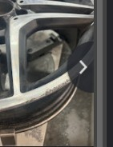

Chaque véhicule est traité au cas par cas : diagnostic précis, méthode adaptée, finition contrôlée avant restitution.
Chocs, enfoncements et déformations de tôlerie sont traités pour retrouver la ligne d'origine du véhicule, sans reprise de peinture quand c'est possible.
Mise en peinture en cabine contrôlée, raccords invisibles, teintes reproduites à l'identique pour un rendu homogène sur l'ensemble du véhicule.
Pare-chocs, ailes, portières : remplacement des pièces trop endommagées pour être réparées, montées et réglées en atelier.
Reprise complète d'une carrosserie fatiguée — rouille, éclats, usure générale — pour redonner au véhicule une allure soignée.
La jante poly diamanté (usinage diamant + vernis) est belle neuve, mais se raye, se ternit et pique avec le temps. L'atelier reprend l'usinage et le vernis pour retrouver l'aspect miroir d'origine, jante par jante.

Photo issue de la fiche Google de l'atelier — à remplacer par vos propres visuels.
Examen du véhicule et estimation du travail nécessaire, sans engagement.
Devis clair, poste par poste, avant toute intervention sur le véhicule.
Accompagnement dans les démarches et échanges avec votre assureur.